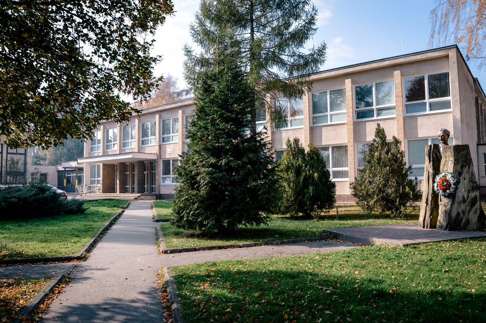

Sťažnosti rodičov na ich deti o neustálom trávení svojho času na internete stále stúpa.
Bolo otestovaných niekoľko spôsobov ako tomuto zabrániť, či už časový limit strávený na internete
alebo kompletné zrušenie prístupu na internet. Spýtali sme sa viacero rodičov a detí rôznych vekových kategórií,
ako by si priali zmeniť prístup na túto tému a prišli sme na viac výsledkov.
Rodičia si prajú, aby trávili viac času s rodinou. V niektorých prípadoch sme sa dozvedeli, že rodičia o
svojich deťoch nevedia toľko, koľko by mali vedieť. Na otázky "Čo vaše deti robia v škole?" sme u viacerých
rodín dostali odpovede typu "Neviem, nič mi nepovie, len príde domov a už na telefóne ťukajú".
U detí sme si mysleli, že väčšina bude závislá na internete. No po opýtaní sme zistili, že väčšina
vôbec nie je natoľko upnutá na ich zariadeniach, aby sa to považovalo za závislosť. Veľká väčšina
opýtaných si myslí, že rodičia sú "po zadu" a "nechápu mladú generáciu".
My sme sa rozhodli tento problém vyriešiť. Vytvorili sme sadu úloh, ktoré prinútia deti tráviť čas s
rodinou a rodičom pomôžu sa posunúť "do predu".
Projekt Aktívna Rodina je fiktívny projekt, ktorý vytvoril Samuel Rieger, žiak 3.D triedy (2023/24),
ako odpoveď na projekt z predmetu TIR pre pána učiteľa Frča Ovšáka.
